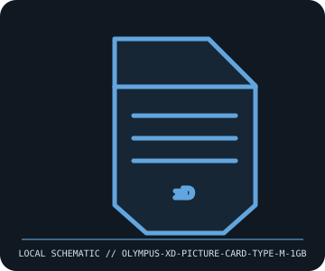

[ REMOVABLE MEDIA // INDIVIDUAL RECORD ]
Olympus xD-Picture Card Type M 1 GB
Olympus/Fujifilm xD-Picture Card Type M generation. This entry describes the identified medium or reader, not a bundled drive/media pair; exact capacity and compatibility are model- and host-dependent.

IDENTIFICATION: Record the full label, manufacturer part number, revision/date code, format markings, and packaging. Product-family names alone do not identify capacity generation or supported drive.
Format and compatibility
| Catalog subcategory | Flash drives and memory cards |
|---|---|
| Catalog identity | Olympus xD-Picture Card Type M 1 GB |
| Format / era | Olympus/Fujifilm xD-Picture Card Type M generation |
| Media/device distinction | This record is the removable medium only; the compatible drive is separate and not included. |
| Capacity / interface | 1 GB xD-Picture Card Type M removable flash card, a proprietary small-card format developed for digital cameras. Type M uses multi-layer NAND and is slower than some Type H cards; exact speed depends on card and host. |
| Compatibility | Requires a camera/reader with xD-Picture Card support. Type M capacity support is camera-model-specific; older xD cameras may require firmware updates or may not support 1 GB cards. Type M and Type H can differ in speed and compatibility despite same shell. |
| Variant caveat | “1 GB” Type M is not Type M+ or Type H. Check the camera manufacturer’s exact xD card compatibility table and firmware notes; a generic xD reader may not support all card capacities. |
Media care and preservation
Keep in a rigid case, protect gold contacts from fingerprints and corrosion, and avoid bending or static. Do not remove while the camera writes. Copy and checksum image files before reformatting; maintain additional copies outside the camera card.
- Preserve original packaging, labels, and acquisition/context notes; photograph both sides and record any write-protect state before use.
- Keep valuable contents in at least two independently verified copies on separate storage. Record a checksum and test a restore; removable media alone is not a preservation plan.
Model and version caveats
“1 GB” Type M is not Type M+ or Type H. Check the camera manufacturer’s exact xD card compatibility table and firmware notes; a generic xD reader may not support all card capacities.
Compatibility statements are limited to the named format/model and published host support. Check manufacturer manual, firmware, regional SKU, and media generation before inserting or writing. A similar connector or cartridge shell is not proof of compatibility.
Sources & further reading
- OM Digital Solutions — Support and manualsOlympus/OM product manuals and camera-specific xD compatibility guidance; verify the exact camera model.
- Fujifilm — xD-Picture Card product/support archiveManufacturer-family reference for xD media; specific camera manual takes precedence for Type M/1 GB support.
Sources identify the relevant standard, manufacturer, or product family. Where an archived SKU-specific datasheet is unavailable, the exact label/manual and supported host list take precedence over family-level marketing claims.